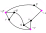

Hard Problems
Finding a resource-intensive solution so a problem is not evidence that the problem is difficult.
For example, the problem of sorting an array can be solved in various dumb ways: bogosort, at one end, runs in \(\mathcal O(n!)\)-time, and merge sort at the other runs in \(\mathcal O(n\log(n))\)-time.
Sorting ain't that bad!
Big-O analysis of worst-case runtime is a sort of upper-bound on the difficulty of an algorithmic problem.
Once we find an algorithm for solving a problem in \(\mathcal O(f)\)-time, we know that it is "at most \(\mathcal O(f)\)-difficult".
This opens up the possibility of beating that time, thereby showing that the problem is not as hard as we thought.
On the other hand, Big-\(\Omega\) analysis gives a lower bound on the (typically worst-case) running time of an algorithm.
But with Turing machines, complexity is a bit fuzzier: translating between a Turing machine and a physical computer is not always linear, and the Church-Turing thesis in particular does not directly make any observation about the complexity of translating between different versions of the deterministic Turing machine (like multi-tape and multiple-to-one-symbols; both of which take \(\mathcal O(n^2)\)-time).
This fuzziness was our motivation to consider the families \(\mathsf{P}\), \(\mathsf{NP}\), \(\mathsf{EXP}\), and so on.
In this lecture, our goal is to give a useful lower-bound on the complexity of an algorithm in this fuzzy paradigm of complexity classes.
Hardness
The intuitive notion of "one problem is harder than another", as many of you have probably discovered by now, has to do with reductions.
What we learn from a reduction \(L_1 \preceq L_2\) (i.e., there exists a reduction \(r \colon L_1 \preceq L_2\)) is that \(L_2\) was the "harder" problem: any solution to \(L_2\) is enough to solve the "easier" problem \(L_1\).
This relation \(\preceq \subseteq 2^{A^*}\) is a kind of "relative hardness" measure for problems.
This is where the following terminology comes from.
(\(\mathsf{Fam}\)-Hardness)
Let \(\mathsf{Fam} \subseteq 2^{A^*}\) be any family of languages, and let \(L \subseteq A^*\) be a language.
We say that \(L\) is \(\mathsf{Fam}\)-hard if for any \(U \in \mathsf{Fam}\), there is a polynomial time reduction \(r \colon U \preceq L\).
So, for example, a decision problem is \(\mathsf{P}\)-hard if it has a polynomial time reduction from every tractible problem.
The broader class of \(\mathsf{NP}\)-hard problems get a special name because they are the prime focus of the \(\mathsf{P}=\mathsf{NP}\) problem mentioned last time.
(Hard Problems)
A decision problem (i.e., language) \(L \subseteq A^*\) is generally called hard if \(L\) is \(\mathsf{NP}\)-hard.
A lot of your favourite problems are hard, unfortunately.
Many puzzle and videogames have been shown to be \(\mathsf{NP}\)-hard, including
What this means is that any algorithm for deciding whether a particular configuration of the puzzle (of arbitrary size---these results often generalize the game so that the game board can be arbitrarily large) has a solution at all can be used to solve any other computational problem in \(\mathsf{NP}\) with only a polynomial amount of added runtime.
Directly showing that a decision problem is \(\mathsf{NP}\)-hard is so difficult that some of the most fundamental results of the field are proofs of this form.
What is more typical is to show that a problem is \(\mathsf{NP}\)-hard by exhibiting a polynomial time reduction to another problem that is \(\mathsf{NP}\)-hard.
(Hardness by Reduction)
Let \(\mathsf{Fam} \subseteq 2^{A^*}\) be a family of languages, and let \(L \subseteq A^*\) be \(\mathsf{Fam}\)-hard.
Suppose that we had another language \(W \subseteq A^*\) and a polynomial time reduction \(r \colon L \preceq W\).
Show that \(W\) is also \(\mathsf{Fam}\)-hard.
(Proving Hardness by Reduction)
Prove the Hardness by Reduction theorem.
We are going to see a reduction in action a little bit later.
Completeness
A slightly more confusing property of a problem with respect to a complexity class is completeness.
(\(\mathsf{Fam}\)-completeness)
Let \(\mathsf{Fam} \subseteq 2^{A^*}\) be a family of languages.
A language \(L \subseteq A^*\) is said to be \(\mathsf{Fam}\)-complete if \(L \in \mathsf{Fam}\) and \(L\) is \(\mathsf{Fam}\)-hard.
Many puzzle games, including some of those mentioned at the top, are in fact \(\mathsf{NP}\)-complete, in addition to be \(\mathsf{NP}\)-hard.
A long list of \(\mathsf{NP}\)-complete problems can be found on Wikipedia.
The significance of \(\mathsf{NP}\)-complete problems extends past their ubiquity in the gaming world.
Outside of the context of theory, many practical problems that we would love to be solved in some efficient manner are woefully \(\mathsf{NP}\)-complete.
And what's worse, if anybody can come up with a polynomial time solution to any one of the many known \(\mathsf{NP}\)-complete problems, then that person has discovered that \(\mathsf{P} = \mathsf{NP}\) (an equation that is widely believed to be false).
(The \(\mathsf{NP}\) to \(\mathsf{P}\) Pipeline)
Let \(L \subseteq A^*\) be a language, and assume that \(L\) is \(\mathsf{NP}\)-complete.
If \(L \in \mathsf{P}\), then \(\mathsf{P} = \mathsf{NP}\).
We already know that \(\mathsf{P} \subseteq \mathsf{NP}\).
To see the opposite inclusion, let \(U \in \mathsf{NP}\) be any language verifiable in polynomial time.
Since \(L\) is \(\mathsf{NP}\)-hard, there is a polynomial time reduction \(U \preceq L\).
By assumption, \(L \in \mathsf{P}\), so there is a polynomial time reduction from \(U\) to a tractable problem.
Thus, \(U \in \mathsf{P}\) as well.
Hard/Complete Problems
We are now going to consider a few hard/complete problems.
The first, and most important of these problems is the satisfiability problem.
Most other \(\mathsf{NP}\)-complete problems are shown to be so by reducing the satisfiability problem to them.
Satisfiability
In discrete math, you will have seen a bit of propositional logic.
The basic ingredients were a set \(\mathbb P\) of basic propositions, and some connectives \(\wedge\) (and), \(\vee\) (or), and \(\neg\) (not) with which you could form new propositions (called formulas) from old ones.
More precisely, we can generate the set of formulas with a grammar.
(Propositional Formulas, Satisfiability)
Let \(\mathbb P\) be any set, elements of which we will call
basic propositions.
The set \(\mathit{Form}\) of all
propositional formulas is generated by the grammar
\[
F \to p \mid (F \wedge F) \mid (F \vee F) \mid (\neg F)
\]
where \(p \in \mathbb P\).
A
truth assignment is a function \(\alpha \colon \mathbb P \to \{0,1\}\), indicating which basic propositions are to be taken as "false" or "true".
The truth assignment \(\alpha\) extends to all propositional formulas via the truth table below:
\[\begin{array}{| c |c | c | c | c | c|}
\hline
\alpha(\varphi_1) & \alpha(\varphi_2) & \alpha(\varphi_1 \wedge \varphi_2) & \alpha(\varphi_1 \vee \varphi_2) & \alpha(\neg \varphi_1) \\
\hline
1 & 1 & 1 & 1 & 0 \\
0 & 1 & 0 & 1 & 1 \\
1 & 0 & 0 & 1 & 0 \\
0 & 0 & 0 & 0 & 1 \\
\hline
\end{array}\]
For a given formula \(\varphi\) and truth assignment \(\alpha \colon \mathbb P \to \{0,1\}\), we say that \(\alpha\)
satisfies \(\varphi\) if \(\alpha(\varphi) = 1\).
A formula \(\varphi\) is called
satisfiable if there exists a truth assignment that satisfies it.
As usual, we won't be writing all of the brackets into our propositional formulas.
The order of operations for the connectives is:
\[
(\ ), ~ \neg, ~\wedge, ~\vee
\]
so for eg., \(\neg p \wedge q \vee r = (((\neg p) \wedge q) \vee r)\).
(Satisfying Formula)
Determine which of the following formulas is satisfiable.
- \(\neg p \wedge q \wedge \neg q\)
- \((p \vee q) \wedge (\neg q)\)
- \((p \wedge q) \vee (\neg q \wedge q) \vee (p \wedge \neg q)\)
The satisfiability problem is a decision problem involving propositional formulas in a certain format.
(Conjunctive Normal Form)
A formula \(\varphi\) is a literal if \(\varphi = p\) or \(\varphi = \neg p\) for some \(p \in \mathbb P\).
A disjunction of literals is a formula of the form
\[
\varphi_1 \vee \varphi_2 \vee \cdots \vee \varphi_n
\]
where every \(\varphi_i\) is a literal.
A formula is in conjunctive normal form (or CNF) if it is of the form
\[
\varphi_1 \wedge \varphi_2 \wedge \cdots \wedge \varphi_n
\]
where this time, every \(\varphi_i\) is a disjunction of literals.
Using DeMorgan's laws, one can show (by induction) that every propositional formula is logically equivalent to a formula in CNF.
For a simple example,
\[\begin{aligned}
\neg(p \wedge \neg q) \wedge \neg (q \vee r)
= (\neg p \vee q) \wedge \neg q \wedge \neg r
\end{aligned}\]
The following problem, which Cook showed to be \(\mathsf{NP}\)-complete in 1971, deals with the complexity of determining whether a given propositional formula in CNF is satisfiable.
(Satisfiability)
The satisfiability problem is given by the language
\[
\mathit{SAT} = \{\varphi \in \mathit{Form} \mid \text{\(\varphi\) is satisfiable and in CNF}\}
\]
It can be determined in linear time whether a given formula is in CNF (the string only has to be scanned from left to right once), so the real difficulty of the problem lies in finding a truth assignment that satifies the formula.
Note that given a formula in CNF, \(\varphi\), and given a truth assigment \(\alpha \colon \mathbb P \to \{0,1\}\), it can be determined in polynomial time whether \(\alpha\) satisfies \(\varphi\).
Note that \(\varphi\) is by definition a string of symbols, so no string representation is needed here.
Briefly, here is such a procedure:
\(\alpha\)-SAT Checker Algorithm
- Scan \(\varphi\) from left to right and replace each instance of \(p\) with \(\alpha(p)\). Move on to step 2.
-
Now rewind the tape and scan from left to right and carry out the following replacements:
\[\begin{aligned}
(1 \wedge 1) &\to 1 &
(0 \wedge 1) &\to 0 \\
(1 \wedge 0) &\to 0 &
(0 \wedge 0) &\to 0 \\
%
(1 \vee 1) &\to 1 &
(0 \vee 1) &\to 1 \\
(1 \vee 0) &\to 1 &
(0 \vee 0) &\to 0 \\
%
(\neg 1) &\to 0 &
(\neg 0) &\to 1
\end{aligned}\]
- If the string on the tape consists of either \(0\) or \(1\), then halt. Else, go to 2.
The length of the string decreases with every repetition of step 2, so this algorithm runs in \(\mathcal O(n^2)\)-time.
Observe, then, that the nondeterministic Turing machine that runs the above procedure on all possible truth assignments (for the basic propositions appearing in \(\varphi\)) runs in nondeterministic \(\mathcal O(n^2)\)-time.
(SAT is NP)
The satisfiability problem is verifiable in polynomial time, i.e., \(\mathit{SAT} \in \mathsf{NP}\).
(Satisfying Formulas Algorithmically)
Run the \(\alpha\)-SAT Checker algorithm above on the input string \((((\neg p) \vee q) \wedge ((\neg q) \wedge (\neg r)))\) and the truth assignment \(\alpha(p) = 1\), \(\alpha(q) = 0\), and \(\alpha(r) = 1\).
Interestingly, all other problems in \(\mathsf{NP}\) can efficiently be reduced to \(\mathit{SAT}\).
(Cook-Levin, 1971)
The satisfiability problem \(\mathit{SAT}\) is \(\mathsf{NP}\)-complete.
The original proof can be found on page 2 of this paper: (Cook, 1971).
Wikipedia has a great rendition of the proof, reproducing an argument found in section 2.6 of Computers and Intractability, Gary and Johnson.
The gist of the proof is that, given any general Turing machine that verifies a given language \(L\) in nondeterministic polynomial time, one can form disjunctions of literals that describe different aspects of the runtime of the Turing machine, and then satisfiability of the conjunction of those literals determines whether the Turing machine has an accepting run (the halting behaviour of the Turing machine can be deduced from the satisfiability of the conjunction of these formulas).
All of this leads to a very important technique for proving that a given decision problem is \(\mathsf{NP}\)-hard.
(Reduction to SAT)
Let \(L \subseteq A^*\) be any language (decision problem).
If there is a polynomial time reduction \(\mathit{SAT} \preceq L\), then \(L\) is \(\mathsf{NP}\)-hard.
In the same paper, Cook proves something even more remarkable: a much simpler version of \(\mathit{SAT}\) is also \(\mathsf{NP}\)-complete.
This one we are actually going to prove by hand.
(3-Bounded Conjunctive Normal Form)
A 3-disjunct of literals is a formula of the form
\[
\varphi_1 \vee \varphi_2 \vee \varphi_3
\]
where every \(\varphi_i\) is a literal.
A formula is in 3-conjunctive normal form (or 3-CNF) if it is of the form
\[
\varphi_1 \wedge \varphi_2 \wedge \cdots \wedge \varphi_n
\]
where this time, every \(\varphi_i\) is a 3-disjunct of literals.
(3SAT is NP-complete)
The 3-conjunct satisfiability problem is the decision problem
\[
\mathit{3SAT} = \{\varphi \in \mathit{Form} \mid \text{\(\varphi\) is satisfiable and in 3-CNF}\}
\]
This problem is \(\mathsf{NP}\)-complete.
First of all, \(\mathit{3SAT}\) is in \(\mathsf{NP}\) for the same reason that \(\mathit{SAT}\) is (the same algorithm works).
For hardness, we are going to construct a polynomial time reduction \(r \colon \mathit{SAT} \preceq \mathit{3SAT}\).
Then the Reduction to SAT theorem tells us that \(\mathit{3SAT}\) is \(\mathsf{NP}\)-hard.
The construction works by showing that every formula in CNF is equivalent to one in 3-CNF, and that the CNF-to-3-CNF conversion runs in polynomial time.
We start with the following case to illustrate the process: consider the propositional formula
\[
\varphi = p_1 \vee \neg p_2 \vee p_3 \vee \neg p_4
\]
for some \(p_1, \dots, p_4 \in \mathbb P\).
Note that \(\varphi\) is satisfiable.
This formula is a disjunction of more than 3 literals, so is not in 3-CNF.
But, since we have as many propositions as we want, we can find \({\color{blue} q_1},{\color{blue} q_2} \in \mathbb P\) that do not already appear in the formula, from which we can build the following formula that IS in CNF:
\[
\varphi' = ({\color{blue} q} \vee p_1 \vee \neg p_2)
\wedge ({\color{blue} \neg q} \vee p_3 \vee \neg p_4)
\]
The general idea is that \(\varphi'\) "partitions \(\varphi\) into possible ways of satisfying \(\varphi\)".
(Simple 3SAT Transform)
Show that \(\varphi'\) is satisfiable.
In fact, show that any truth assignment that satisfies \(\varphi\) also satisfies \(\varphi'\).
Let's consider a slightly more complicated example:
\[
\varphi = (p_1 \vee \neg p_2 \vee p_3 \vee \neg p_4 \vee p_5) \wedge (\neg p_1 \vee p_2 \vee \neg p_4)
\]
This formula is in CNF but not in 3-CNF.
The latter half of the formula is a disjunction of 3 literals, so it need not be changed.
The reducer we have in mind would transform (what is now) \(\varphi\) into
\[
\varphi' = ({\color{blue} q_1} \vee p_1 \vee \neg p_2)
\wedge ({\color{blue} q_2} \vee {\color{blue} \neg q_1} \vee p_3)
\wedge ({\color{blue} \neg q_2} \vee p_4 \vee \neg p_5)
\wedge (\neg p_1 \vee p_2 \vee \neg p_4)
\]
(Compund 3SAT Transform)
Consider the formula
\[
\varphi = (p_1 \vee \neg p_2) \wedge (\neg p_1 \vee p_2 \vee \neg p_3 \vee p_4) \wedge \neg p_4 \wedge p_3
\]
- Is \(\varphi\) in 3-CNF? If not, use the technique above to find a formula \(\varphi'\) such that \(\varphi\) is satisfiable if and only if \(\varphi'\) is satisfiable.
- Is \(\varphi\) satisfiable?
In general, suppose
\[
\varphi = \varphi_1 \wedge \varphi_2 \wedge \cdots \wedge \varphi_m
\]
where each \(\varphi_i\) is a disjunction of literals.
The polynomial time reducer moves from left to right, and finding a formula \(\varphi_i'\) in 3-CNF for each \(i \le m\) such that \(\varphi_i\) is satisfiable if and only if \(\varphi_i'\) is satisfiable.
The formula \(\varphi_i'\) is constructed as follows:
-
if \(\varphi_i\) is a disjunction of at most 3 literals, \(\varphi_i' = \varphi_i\).
-
Otherwise, if
\[
\varphi_i = \ell_1 \vee \ell_2 \vee \cdots \vee \ell_k
\]
where \(\ell_j \in \{p_j, \neg p_j\}\) is a literal for each \(j \le k\) and \(k > 3\), we find basic propositions \({\color{blue} q_1},\dots, {\color{blue} q_{k-3}} \in \mathbb P\) that do not appear in \(\varphi\) or any of \(\varphi_1', \dots, \varphi_{i-1}'\) and define
\[
\varphi_i' =
({\color{blue} q_1} \vee \ell_1 \vee \ell_2)
\wedge ({\color{blue} \neg q_1} \vee {\color{blue} q_2} \vee \ell_3)
% \wedge ({\color{blue} \neg q_2} \vee {\color{blue} q_3} \vee \ell_4)
\wedge \cdots
\wedge ({\color{blue} \neg q_{k-4}} \vee {\color{blue} q_{k-3}} \vee \ell_{k-2})
\wedge ({\color{blue} \neg q_{k-3}} \vee \ell_{k-1} \vee \ell_{k})
\]
The string transformer \(r\) is then defined by
\[
r(\varphi) = \varphi' = \varphi_1' \wedge \varphi_2' \wedge \cdots \wedge \varphi_m'
\]
Notice that \(\varphi_i'\) is in 3-CNF, and therefore that \(\varphi'\) also is in 3-CNF.
(Complex 3-CNF Transform Correctness)
Show that \(\varphi\) is satisfiable if and only if \(\varphi'\) is satisfiable.
We are now going to argue that \(r\) can be implemented by a Turing program that runs in \(\mathcal O(n^3)\)-time, where \(\mathsf{len}(\varphi) = n\).
Let \(k = \max_{i \le n} \mathsf{len}(\varphi_i)\).
Then the number of fresh propositions \(q_j\) added to \(\varphi\) is \(k-3\) (assuming \(k \ge 3\)).
This tells us that \(\mathsf{len}(\varphi_i') \le (k-3) \times k\), and then \(\mathsf{len}(\varphi') \le m \times (k-3) \times k\).
We obviously have \(m \le n\) and \(k \le n\), so \(m \times k \le n^2\), and therefore \(\mathsf{len}(\varphi') \in \mathcal O(n^2)\).
Thus, whatever the run-time of the implementation of \(r\), it needs to extend the formula \(\varphi\) with at most \(\mathcal O(n^2)\)-many characters.
We need to argue that the process of implementing this extension adds at most another factor of \(n\) to the runtime.
Here is the algorithm in more detail, running on \(\varphi\) (using multiple tapes if needed):
- Scan the string \(\varphi\) and
- keep track of the largest number of literals that appear in a conjunct, call it \(k\)
- if a conjunct \(\varphi_i\) has \( > 3\) literals, mark its first character
- keep track of the basic propositions that appear.
-
If \(k > 3\), generate \(k-3\) fresh basic propositions, call them \(q_1, \dots, q_{k-3}\).
-
For each \(\varphi_i\) with a marked first character, expand it according to the process described above.
Steps 1 and 2 take place in \(\mathcal O(n)\)-time.
Step 3 is the time-intensive step:
the expansion takes place \(\mathcal O(m)\) times, and splits a conjunct with \(k\) literals into \(\mathcal O(k^2)\) conjuncts.
In total, this step takes \(\mathcal O(m \times k^2) \subseteq \mathcal O(n^3)\) steps.
Hence, in total, the algorithm to compute \(r\) takes \(\mathcal O(n + n + n^3) = \mathcal O(n^3)\)-time.
Since \(\varphi\) is satisfiable if and only if \(r(\varphi) = \varphi'\) is satisfiable, \(r \colon \mathit{SAT} \preceq \mathit{3SAT}\).
By the Reduction to SAT theorem, \(\mathit{3SAT}\) is \(\mathsf{NP}\)-hard.
And of course, we obtain the corresponding technique for showing that a decision problem is \(\mathsf{NP}\)-hard.
(Reduction to 3SAT)
Let \(L \subseteq A^*\) be any language (decision problem).
If there is a polynomial time reduction \(\mathit{3SAT} \preceq L\), then \(L\) is \(\mathsf{NP}\)-hard.
Many, many problems known to be \(\mathsf{NP}\)-hard/complete are proven to be so by reduction from \(\mathit{3SAT}\), because it is so simple to work with.
(independent set Problem)
Recall that a
(undirected) graph is a pair \(\mathcal G = (V, E)\) consisting of a set \(V\) of
vertices and a set \(E \subseteq \big\{ \{x,y\} \mid \text{\(x,y \in V\) and \(x \neq y\)}\big\}\) of
edges.
We write \(x \smile y\) when \(\{x,y\} \in E\) and say that \(x\) and \(y\) are
related, and otherwise write \(x \not\smile y\).
(Independent Set)
An
independent set of a graph \(\mathcal G = (V, E)\) is a subset \(C \subseteq V\) such that for every \(x,y \in C\), \(x \not\smile y\).
An
independent set of size \(k\) is just a independent set \(C\) with size \(|C| = k\).
Let \(\mathbf G\) be the set of all undirected finite graphs.
The independent set problem (for size \(k\)) is the decision problem
\[
\mathit{ISet} = \{(\mathcal G, k) \in \mathbf{G} \times \mathbb N \mid \text{\(\mathcal G\) has a independent set of size \(k\)}\}
\]
It turns out that the independent set problem is \(\mathsf{NP}\)-complete, which we can verify with a polynomial time reduction \(r \colon \mathit{3SAT} \preceq \mathit{ISet}\).
OK, so what do we need to do?
We need to come up with a way of transforming a 3-CNF formula \(\varphi\) into an undirected graph \(\mathcal G\) and a natural number \(k\) such that \(\mathcal G\) has a independent set of size \(k\) if and only if \(\varphi\) is satisfiable.
Here is the transformation (based on this set of notes):
(3-CNF to Graph Transformation)
Start with a 3-CNF formula
\[
\varphi =
(\ell_{11} \vee \ell_{12} \vee \ell_{13}) \wedge
\cdots
\wedge (\ell_{m1} \vee \ell_{m2} \vee \ell_{m3})
\]
we define a graph \(r(\varphi) = \mathcal G = (V, E)\) as follows:
-
Start by removing repeated literals and tautologies from \(\varphi\):
- if a conjunct \(\varphi_i\) contains two instances of a literal \(\ell\), remove one of them
- if a conjunct \(\varphi_i\) contains both \(p\) and \(\neg p\) for some \(p \in \mathbb P\), replace \(\varphi_i\) with a fresh basic proposition \(q\)
- if there is a proposition \(p\) (or \(\neg p\)) in \(\varphi\) such that no instance of \(\neg p\) (resp., \(p\)) appears in \(\varphi\), then replace every conjunct \(\varphi_i\) in \(\varphi\) in which \(p\) appears (resp., \(\neg p\)) with a fresh basic proposition \(q\).
This step prepares the formula to be represented as a graph, and does not affect whether or not it is satisfiable.
- The vertices of \(\mathcal G\) are all the literals that appear in (the newly constructed) \(\varphi\), in their respective conjuncts,
\[
V = \{(j, \ell_{ji}) \in \mathbb P\mid 1 \le j \le m, 1 \le i \le 3\}
\]
Here, the \(j\) indicates the \(\varphi_j\) in which \(\ell_{ij}\) appears.
-
The edges are of two kinds:
\[\begin{aligned}
E &= \{(j, \ell_{j1}) \smile (j, \ell_{j2}) \smile (j, \ell_{j3}) \smile (j, \ell_1) \mid 1 \le j \le m\}\\
&\qquad \cup~\{(j, \ell_{ji}) \smile (l, \ell_{lk}) \mid j \neq l, \ell_{ji} = \neg \ell_{jk}\}
\end{aligned}\]
In other words, the disjunctions of literals are all connected as triangles, and across these triangles and two literals that are each other's negation are connected.
-
The number \(k\) of independent vertices will be \(k = m\), to force one vertex to be in every triangle in any independent set.
For example, the formula
\[
\varphi = (\neg p \vee \neg q \vee r) \wedge (q \vee \neg r \vee s) \wedge (p \vee \neg s)
\]
gets put together as the graph below:

(Drawing Formulas)
Draw \(r(\varphi)\) for each of
- \(({\color{blue} q} \vee p_1 \vee \neg p_2) \wedge ({\color{blue} \neg q} \vee p_3 \vee \neg p_4)\)
- \(({\color{blue} q_1} \vee p_1 \vee \neg p_2)
\wedge ({\color{blue} q_2} \vee {\color{blue} \neg q_1} \vee p_3)
\wedge ({\color{blue} \neg q_2} \vee p_4 \vee \neg p_5)
\wedge (\neg p_1 \vee p_2 \vee \neg p_4)\)
Let \(\varphi\) be the transformed formula, after Step 1 above has occurred.
Then the existence of an independent set of size \(k = m\) indicates an assignment of truth values to propositions that satisfies the formula.
For example, in the formula \(\varphi\) before the Drawing Formulas exercise above and its graph, the vertices \((1, \neg p), (2, \neg r), (3, \neg s)\) form an independent set.

We obtain a truth-assignment that satisfies \(\varphi\) from this by setting \(\alpha(p) = \alpha(r) = \alpha(s) = 0\).
More generally, we have the following: let \(\varphi = (\ell_{11} \vee \ell_{12} \vee \ell_{13}) \wedge \cdots \wedge (\ell_{m1} \vee \ell_{m2} \vee \ell_{m3})\), assume that Step 1 of the algorithm above has already taken place, and let \(\mathcal G = (V, E)\) be the graph obtained from \(\varphi\).
-
To obtain a truth assignment from an independent set, let \(S \subseteq V\) be an independent set of size \(m\).
Since \(S\) is an independent set, at most one element of \(S\) appears in each triangle.
And furthermore, since \(S\) has \(m\) elements, there is exactly one element of \(S\) in each triangle.
Moreover, for each \(p_{ij} \in \mathbb P\),
Define \(\alpha_S \colon \mathbb P \to \{0,1\}\) by
\[
\alpha_S(p) = \begin{cases}
1 & (p, j) \in S \text{ for some } j \le m\\
0 & (\neg p, j) \in S \text{ for some } j \le m
\end{cases}
\]
define \(\alpha_S(q) = 0\) for all other \(q\) appearing in \(\varphi\) that does not appear in any vertex in the indpendent set \(S\).
This is a truth assignment that satisfies \(\varphi\) because every conjunct of \(\varphi\) contains a literal \(\ell\) such that \(\alpha(\ell) = 1\).
-
To obtain an independent set from a truth assignment \(\alpha\) that satisfies \(\varphi\), for each conjunct \(\varphi_j\) of \(\varphi\), choose a vertex \((j, \ell_{ji}) \in V\) such that \(\alpha(\ell_{ji}) = 1\) and form a set \(S\) from those choices.
There exists such a node in each conjunct because \(\alpha(\varphi_j) = 1\) for all \(j\).
This set is of size \(m\) by design.
This set \(S\) is an independent set because we have chosen exactly one vertex from each triangle, and because only one of each pair of vertices of the form \((j, p)\) and \((l, \neg p)\) that can appear in \(S\) (because \(\alpha\) is a function).
Hence, \(\varphi\) is satisfiable if and only if \(r(\varphi) = \mathcal G = (V, E)\) has an independent set of size \(m\).
The string transformer \(r\) is computed according to the algorithm described above.
Step 1 can be taken in \(\mathcal O(n^2)\)-time, since it involves traversing the formula at most \(n\) times.
The graph \(r(\varphi)\) can be computed in \(\mathcal O(n^2)\) time by traversing the formula \(\varphi\) once for each connection formed.
This shows that \(r \colon \mathit{3SAT} \preceq \mathit{ISet}\) in polynomial time.
By the Reduction to 3SAT theorem, \(\mathit{ISet}\) is \(\mathsf{NP}\)-hard.
(Completeness, Now)
Show that \(\mathit{ISet} \in \mathsf{NP}\).
Guess all the sets!